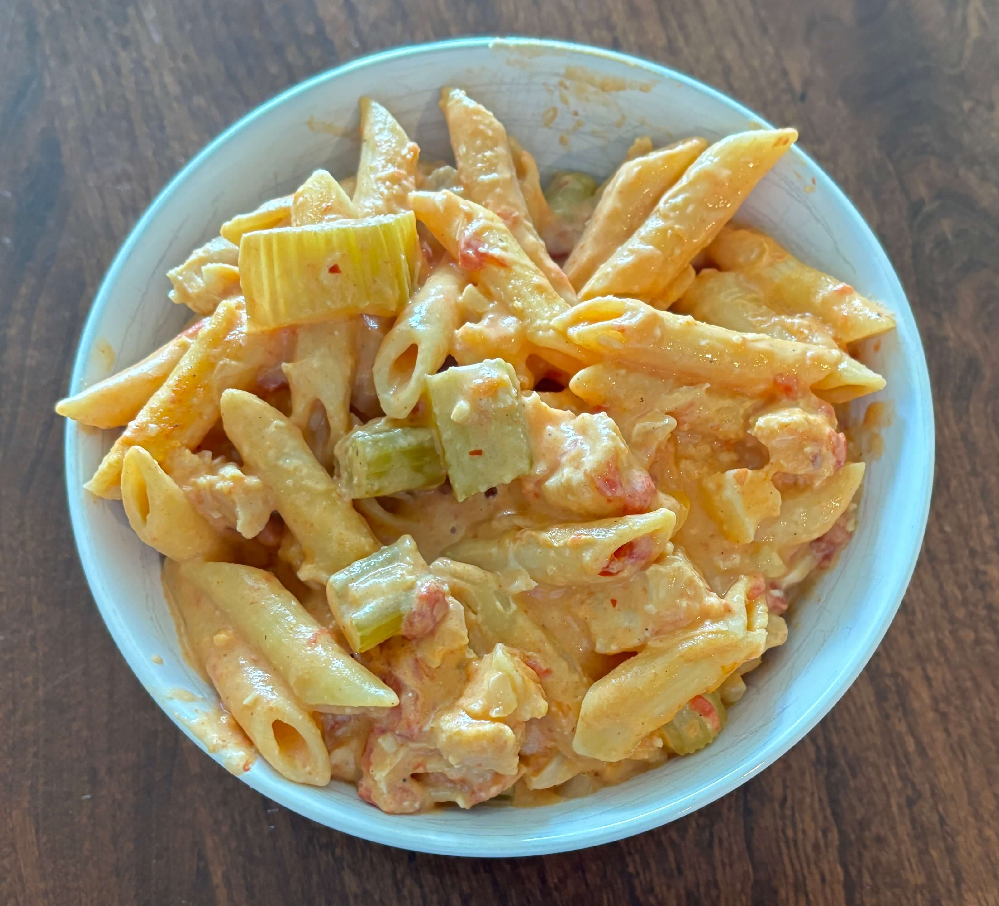

Home
Buffalo Chicken Pasta

6 servings
Prep: 15 min, Cook: 20 min
Ingredients
- 1 lb ground chicken
- ½ cup blue cheese dressing, can sub ranch
- 2 Tablespoons butter, divided
- ½ cup yellow onion, diced
- 1 stick celery, diced
- 3 cloves garlic, minced
- 14.5 oz. diced tomatoes, undrained, (1 can)
- 4 cups chicken broth
- 1 lb. penne
- 1/2 cup buffalo sauce
- 8 oz. cream cheese, softened and cubed
- 1.5 cups cheddar, shredded
- 1 cup mozzarella, shredded
- 1 pinch red pepper flakes, optional
- 2 tablespoons cold butter, optional
Steps
- Brown the ground chicken until cooked through and set aside
- Melt butter in a large pot over medium heat. Add the onions and celery. Cook for 5 minutes, until softened. Add the garlic and cook for 1 more minute.
- Add the undrained diced tomatoes and chicken broth. Bring to a boil and add the pasta. Submerge the pasta into the liquid and let it come back up to a boil.
- Cover and let it boil for 10-13 minutes, or until al dente. Stir occasionally so the pasta doesn't stick.
- Reduce heat to low. Add the buffalo sauce, cubed cream cheese, and shredded cheese. Stir, the sauce will seem thin at first, but it continues to thicken as it stands, and will thicken further at the next step.
- Add the chicken and red pepper flakes
- Optional: Once sauce is near your desired consistency, swirl in 2 Tablespoons COLD butter. This is a technique that chefs use called “Monter au Beurre”, which creates a smooth finish when added to warm sauces.